Documents
The Documents screen is designed to centralize and display all documents in ERP.net that are relevant to a user's account. This includes documents you have created as well as those assigned to you.
By offering instant access and various ways of customizing how documents are displayed, Documents is both flexible and time-saving, eliminating the need to search across different modules.
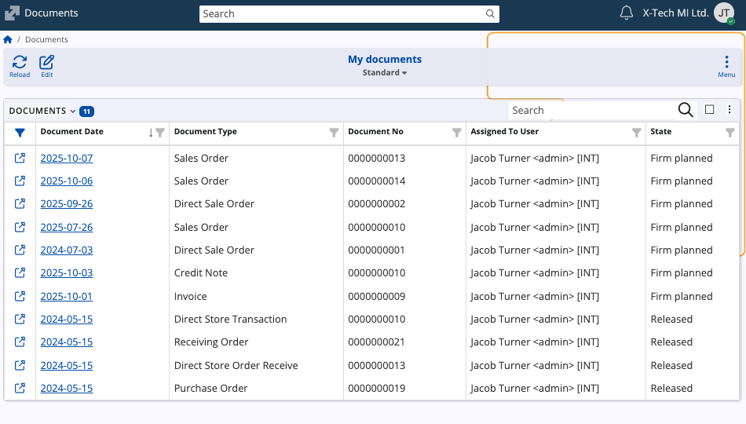
Document assignment
For a document to appear in the Documents environment:
- It must be of state "Released" or higher.
- The Assigned To User field must be filled with the appropriate username.
New documents are automatically assigned to the person creating them (i.e., the current user) by default.
If you assign the document to someone else in your organization, it will appear in their Documents environment.
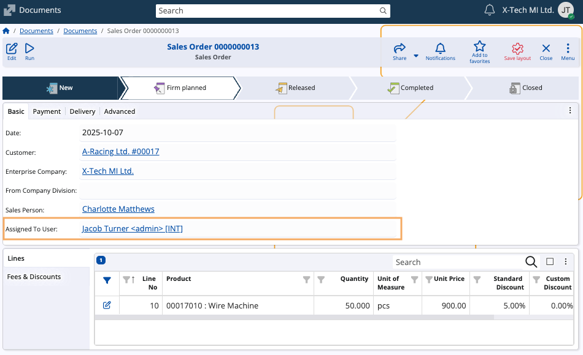
Note
If the Assigned To User field is not visible in the document form, you need to reveal it manually with the Customize panel menu.
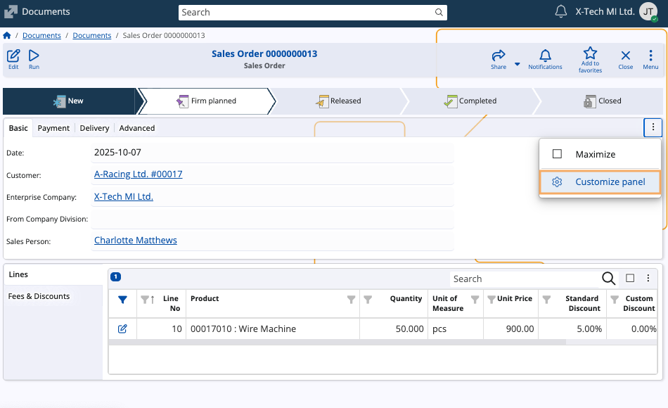
Interface
The screen consits of a table containing all document records which are assigned to the currently logged-in user.
It allows simple operations like searching, filtering, and sorting, as well as more advanced options.
Top bar actions
You can perform basic actions in the top bar above the table:
- Reload: Refreshes the table to display the most up-to-date information.
- Search: A dedicated search bar to quickly find documents by providing details like their number, date, or document type.
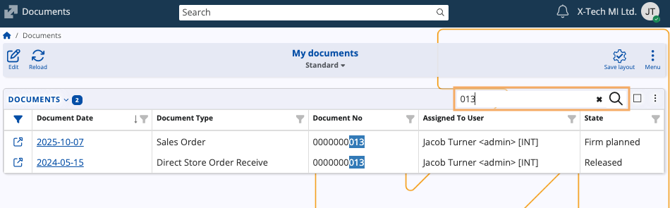
Multi-select actions
You can select one or more documents and perform batch operations on them.
Toggling the Multi select option from the panel Menu allows you to select multiple documents using checkboxes.
The Export feature will become available as soon as one document is selected. This action exports documents into Excel files for external analysis or reporting.
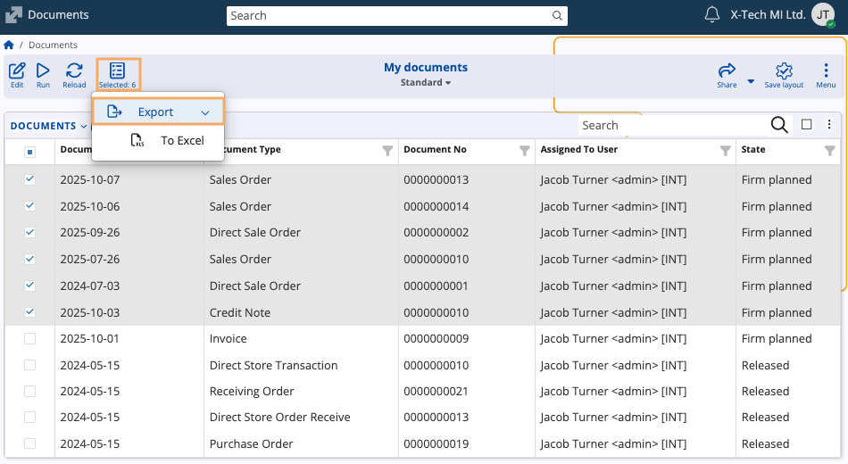
Sharing
When you select one or more documents, you can share them with others using the Share button in the ribbon.
You can copy a direct link for your selection, or share it to a group within your organization's collaborative environment.
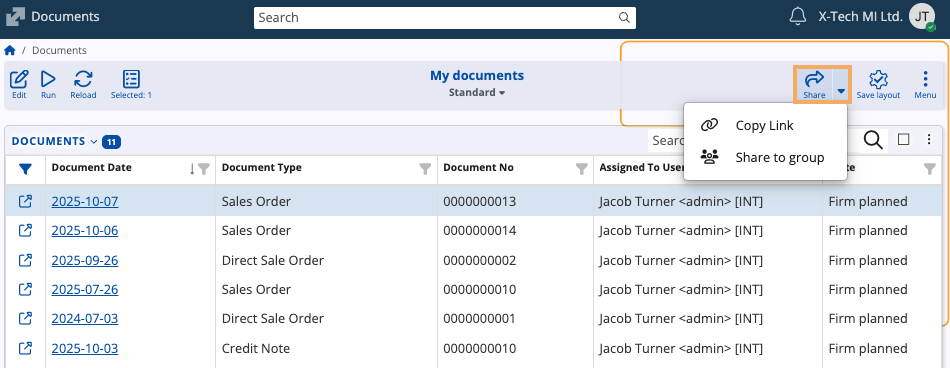
The second option requires you to select that group and optionally add a comment.
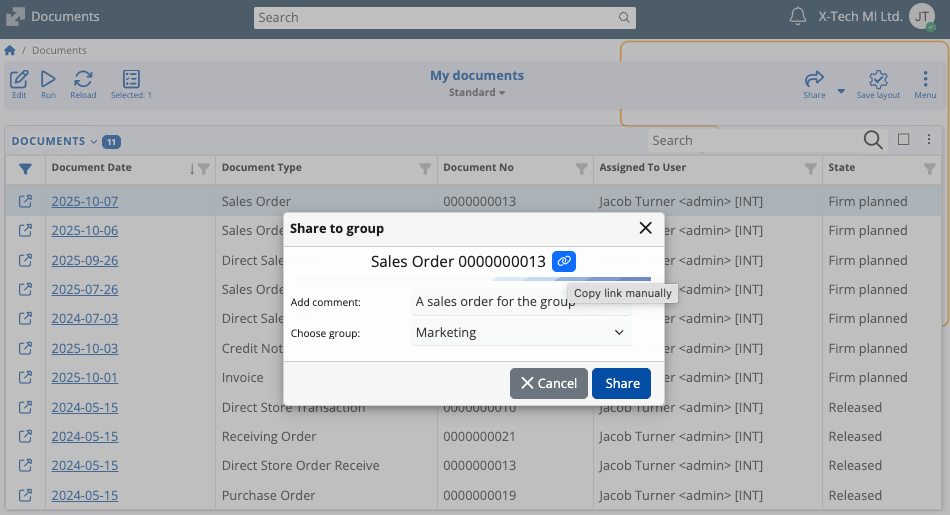
Customization and navigation
My Documents provides extensive customization features to organize and display documents in a variety of ways.
Panel menu options
The vertical three-dot button at the upper-right corner of the Documents table contains a list of actions and layout controls.
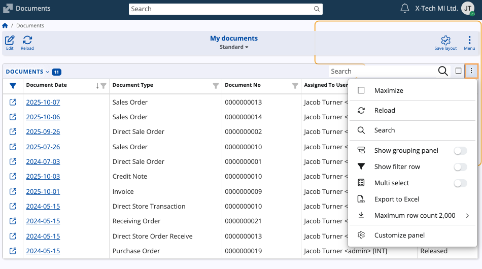
| Menu Option | Functionality |
|---|---|
| Show filter row | Toggles an additional row below each header for column-specific filtering of the table, e.g. using period expressions. |
| Show grouping panel | Reveals a section above the table used for dragging column headers to apply complex document grouping. |
| Maximum row count | Adjusts the maximum number of document rows that the page displays in the table. |
| Customize panel | Opens a window to adjust column visibility and order within the main document grid. |
Grouping panel
The Show grouping panel feature allows you to arrange documents in a hierarchical order based on values in one or more column headers.
When you enable it, an additional space with instructions will appear above the columns.
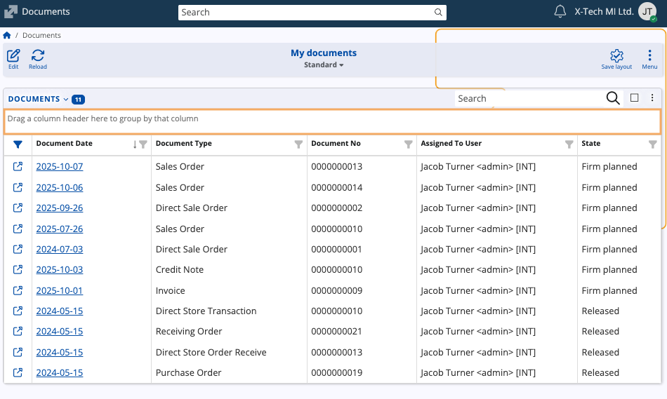
To group, you need to drag and drop a column header into that area.
The table will automatically be re-organized to show documents grouped based on the column you selected.
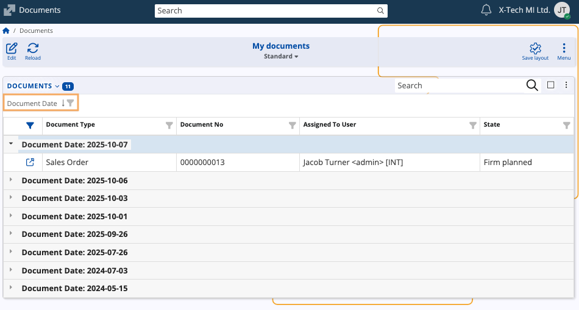
You can create multi-level grouping by dragging multiple column headers.
The first column creates the primary level of groups, and subsequent columns create subgroups (e.g., first grouping by Document Date, then by Document Type).
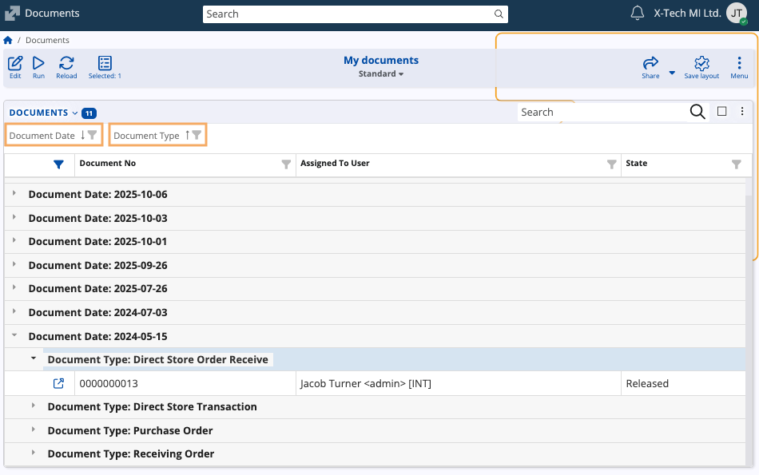
Summary
The Summary feature provides useful statistical information for each table column.
Simply right-click on a column header and select Summary.
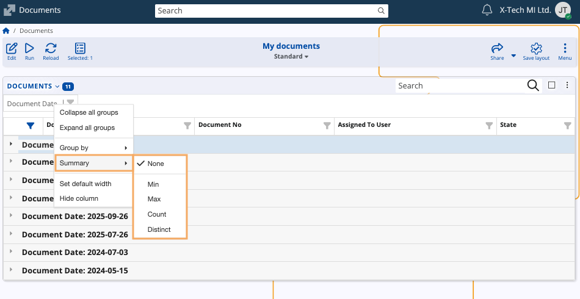
- Count: Calculates the total number of documents where a value is present in that column.
- Distinct: Counts the number of unique values in the field (e.g., the number of unique states, ignoring repetitions).
- Fields with a number data type also offer functions like Max and Min values.
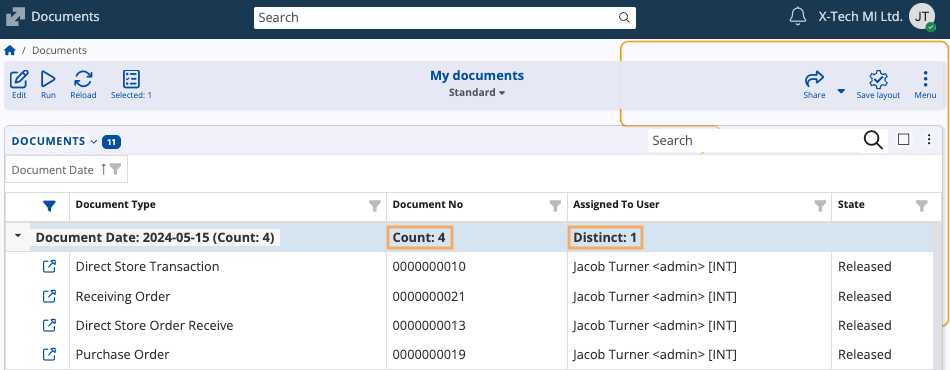
Panel customization
You can manage the Documents table's appearance via the Customize panel option.
This will open a window consisting of two tabs:
Items
Allows you to hide or reveal columns by toggling the slider next to the column name.
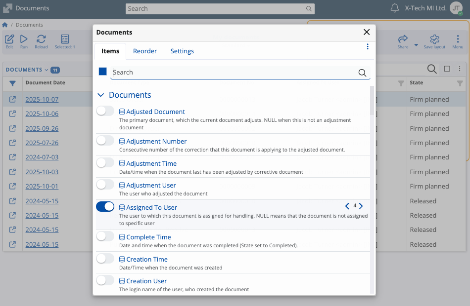
Reorder
Allows you to change the sequence of column headers by dragging and dropping them up or down the list.
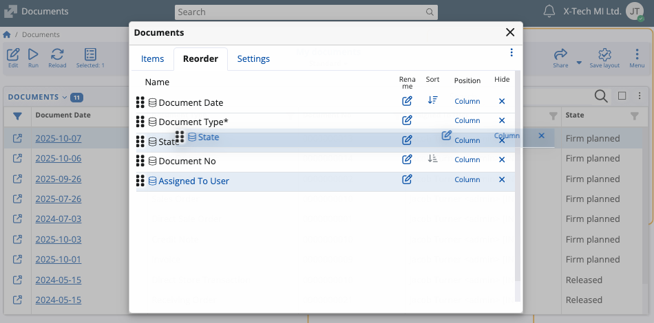
You can further restructure the table using the Position settings for each column.
By default, columns are set to Column mode, but you can make some of them take up an entire row.
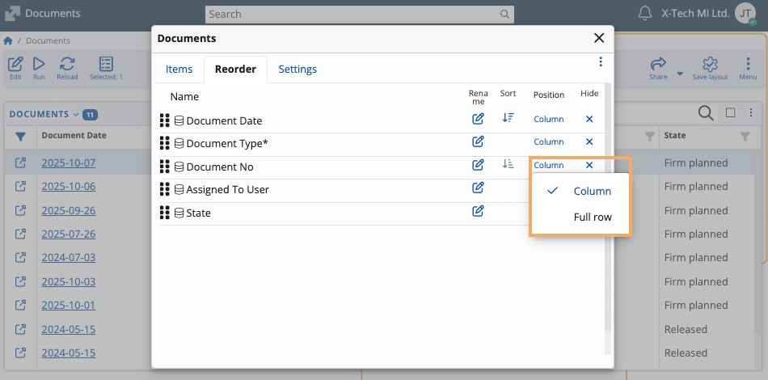
Page actions and customization
The Menu button in the ribbon above the Documents table provides access to more page-oriented and document-specific features.
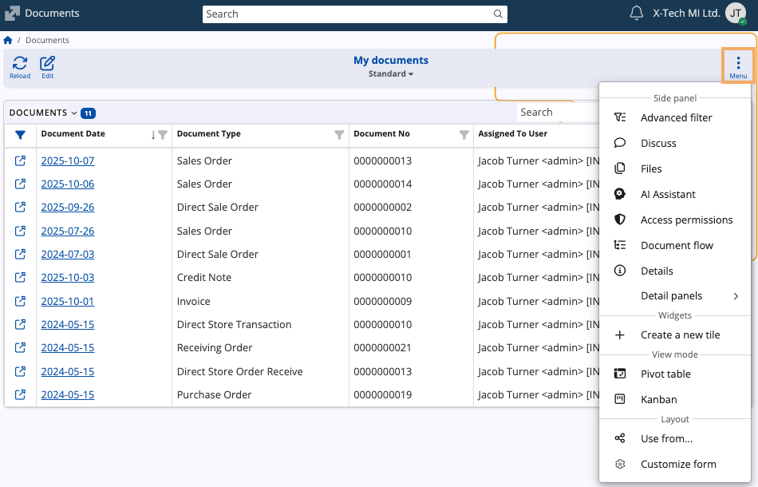
Details
Reveals a side panel preview of a selected document, including shortcuts to fields such as Customer, Enterprise Company and Sales Person.
You can also upload attachments and access the full document directly.
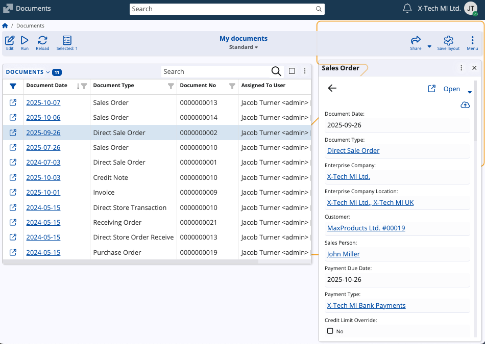
Document flow
Displays a side panel containing the entire chain (sequence) for a selected document, allowing you to access documents that came before and after it.
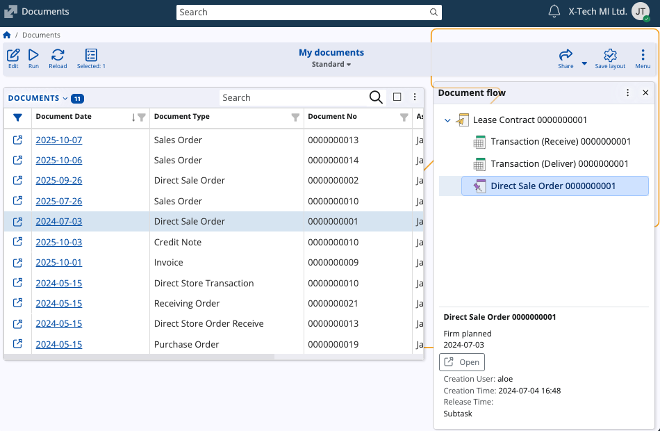
Tiles
You can save a specific configuration of the My Documents page as a tile for direct access.
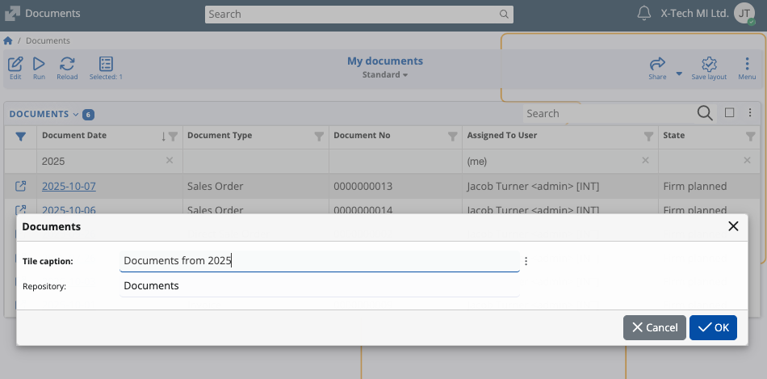
Customize form
Opens the main customization window, allowing you to hide or reveal entire panels and widgets on the screen.
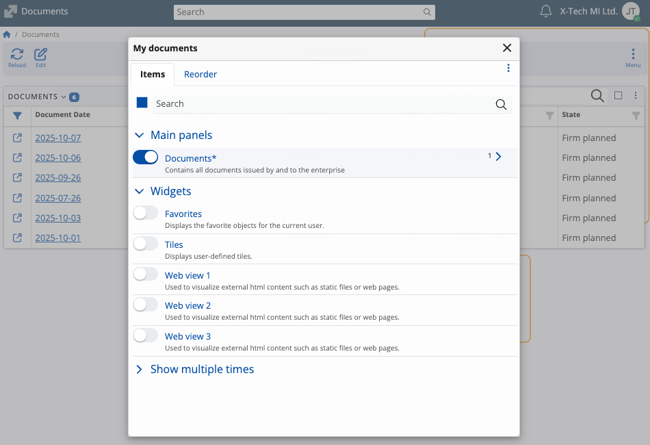
Note
The screenshots taken for this article are from v.26 of the platform.